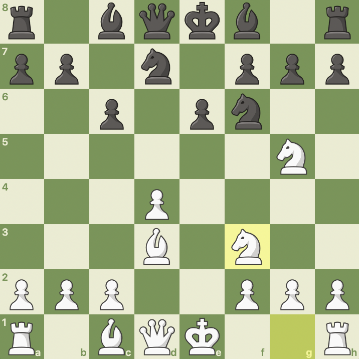
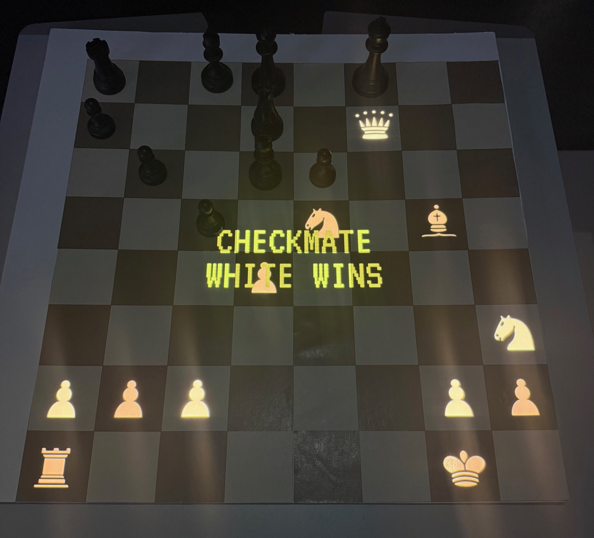
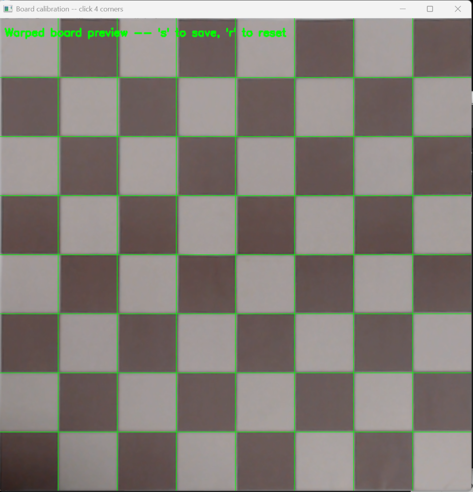
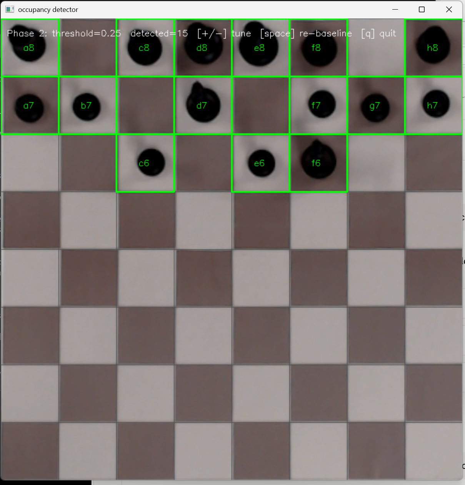

The Rematch
A computer vision system for playing a chess engine on a real board. An overhead camera reads my moves, Stockfish replies, and its pieces are projected onto the board as light. I performed it live, restaging the game in which a machine first beat a world champion.
Chess against a machine, without giving up the board.
I play chess seriously, and without regular opponents nearby most of my games happen online. A screen loses what makes the game: the pieces in your hand, the presence of the person across the table.
So I built a way to play an engine on a physical board. A camera above the board watches my moves. The system works out which move I made, sends it to Stockfish, and projects the reply as glowing pieces on the real squares. No sensors in the board and no special pieces: just a camera, a projector and software.
Taking Kasparov's seat, one move before it went wrong.
In 1997 IBM's Deep Blue beat Garry Kasparov, the reigning world champion, over six games: the first time a computer had beaten a world champion under standard tournament conditions. The deciding sixth game turned on Kasparov's seventh move, widely regarded as the error that lost him the match.
I start from the position just before that move, take Kasparov's seat, and play something else. Keeping my pieces physical and the engine's projected was practical, but it was also the point: I am visibly present at the board, against an opponent that exists only as light and code.
The move Kasparov played, and the one I don't.


Seven modules, one live loop.
Six Python modules each handle one stage of the path from camera to projector, and main.py conducts them. Two calibration scripts run once before play, so the camera and the projector agree on exactly where the squares are.
- No.StageInOut
- 01CameraiPhone via CamoThe boardRaw frame
- 02Motionmotion_detector.pyRaw frameMoving, settling or stable; fires once when a move ends
- 03Board warpboard_calibration.pyRaw frameFlat, top-down board
- 04Occupancyoccupancy_detector.pyTop-down board and empty-board baselineThe set of occupied squares
- 05Game stategame_state.pyOccupied squaresMy move, matched against every legal move, then Stockfish's reply
- 06Renderrenderer.pyBoard positionWhite pieces on a transparent 800 × 800 layer
- 07Compositemain.pyPiece layer and status textPieces on pure black, turned 180° to face me
- 08Projector warpprojector_calibration.pyBoard imageImage aligned to the physical board
- 09Projectorfull-screen windowAligned imageLight on the board
main.py runs the loop, keeps a 10-minute clock per side, and projects check, checkmate and time-out messages.
Never read a half-finished move
The camera watches continuously, and a pause mid-move looks like a finished position. A three-state machine solves it: the board is only read once it has been still for a full second, and only once per move.
Brightness, not piece recognition
Each square is compared to its own empty baseline as a proportional drop, (baseline - current) / baseline, so a black piece on a dark square still registers. The threshold of 0.25 was tuned in the lab: the value where all 15 black pieces read solidly with no false positives.
Infer the move, don't read it
game_state.py works backwards: it tries every legal move and keeps the one that produces the occupancy the camera saw. Almost always exactly one matches. The exception is promotion, where piece type is invisible, accepted as a known limit against a 2750 engine.
Black means no light
The engine's pieces are composited onto pure black, because a projector emits nothing for black. The real board shows through untouched and only the pieces appear, as light, exactly where the squares are.


Two problems, two lessons worth keeping.
Know when to fix the room, not the code
My first board's dark squares were too dark for the occupancy detector. I tried to solve it in software, with texture-based detection and by masking projected squares, and every fix created a new problem.
Reprinting the board with lighter dark squares fixed it outright, and the proportional threshold then worked across every square. Knowing when to stop tuning code and change the physical setup is the lesson I kept.
A bug only other people could find
The projected check and checkmate text worked in my own testing, because I drift towards the same kinds of positions. User testing found the one that broke it: a pawn under the text was lit above the detection threshold, vanished from the read, and the game froze.
The quick fix was smaller, dimmer text. The real fix removed the cause: main.py now hides the overlay on the single frame it reads the board, so the text can never interfere with detection.